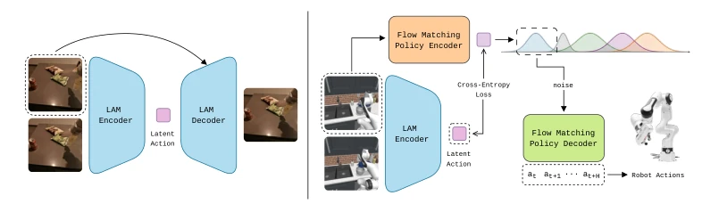
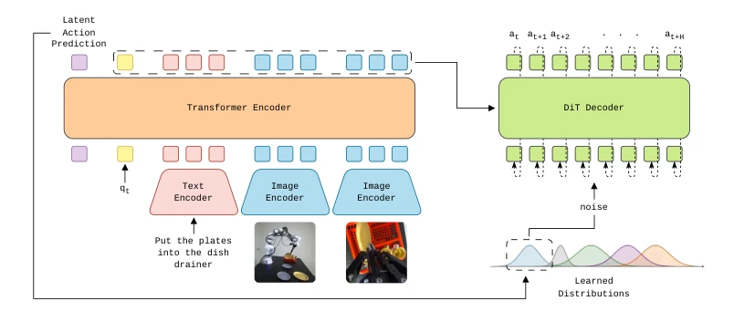
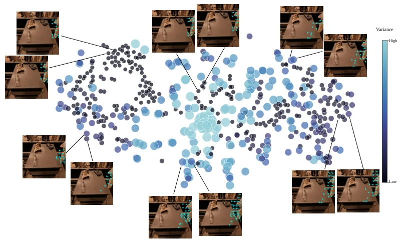
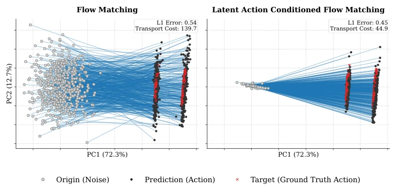
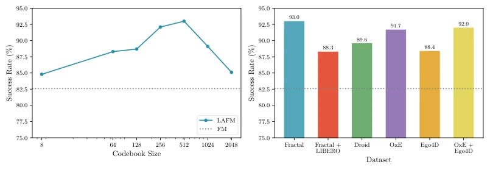
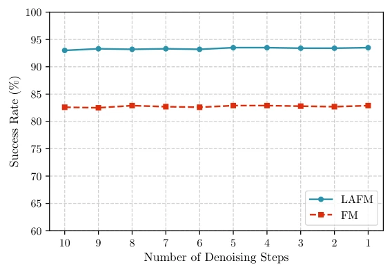

Flow Matching has become the new favorite in robot imitation learning, but the authors found that these 'top students' share a common flaw: sticking rigidly to isotropic Gaussian priors while ignoring the fragmentation of the action space. LAFM's strategy of 'changing the form but not the essence' is actually quite clever, transforming LAM from a pretraining tool into a 'navigator' of the generation process. However, relying on latent actions extracted by LAM means that if LAM learns incorrectly (e.g., mistaking background motion for actions), the policy will also go astray. Although claiming to soundly defeat large VLAs like π0 with a small model, considering the LAM pretraining cost, this accounting still needs careful calculation. Furthermore, although KL regularization prevents overfitting, it also limits the flexibility of the prior, representing a delicate balance. This structural improvement indeed makes the vector field cleaner, but whether generalization is limited by LAM's coverage range still needs observation.
Existing Flow Matching policies [6] and Diffusion Policy [1] are good, but assume all action trajectories originate from a single Gaussian distribution, ignoring the heterogeneity of the robot action space. VLA models like π0 [2] are powerful, but the architecture is bloated. When visual observations are similar, actions may correspond to different grasping strategies or motion phases; a single prior forces the model to learn entangled vector fields, reducing training efficiency. This structural mismatch leads to overly long transport trajectories, limiting the upper bound of policy performance. Especially in long-horizon interactions, variance differences are huge, and fixed priors cannot capture them. This leads to the model needing to learn highly entangled vector fields, bottlenecking training efficiency.
The core is Latent Action Guided Flow Matching. Pipeline: 1. Pretrain LAM [8] to extract discrete latent actions; 2. Policy encoder predicts the latent action index corresponding to the current observation; 3. Select a specific prior distribution N(μk, Σk) from the library based on the index to sample noise; 4. DiT decoder performs Flow Matching denoising based on this noise. The loss function includes Flow Matching loss, latent action classification loss (CCE), and KL regularization of the prior distribution to prevent overfitting. Prior parameters are learned through an embedding layer, initialized as standard normal distribution, and adaptively adjust mean and covariance with training. Specifically, the encoder output classification logits map to the codebook, and the decoder receives encoded features through cross-attention. The noise sampling formula is ϵk = μk + σk ⊙ ζ, where ζ is standard Gaussian noise. KL regularization ensures the prior does not deviate too far from the standard distribution, and the λ2 parameter controls flexibility. This design transforms latent actions from pretraining signals into explicit inductive biases of the generation process.

Figure 1: LAFM overview. Left: We train a LAM to extract latent actions from consecutive frames. Right: We divide our policy into two parts: The encoder predicts the next latent action for a given frame. The predicted latent action is used to condition the noise sampling, guiding the flow matching process in the decoder.

Figure 2: Implemented architecture. The images, task description, and robot’s proprioception are given to the policy encoder. The images and text are first processed by a specialized encoder before being fed to a Transformer. The output of the Transformer encoder is given via cross-attention to the DiT decoder. The latent action predicted by the encoder is used to choose the distribution from which the noise is sampled.
On Franka Panda real tasks (4 items) and LIBERO-90 simulation benchmark tests. Compared to standard FM, success rate on real tasks increased by 23.4%, LIBERO-90 increased by 10.4%. Surpassing π0 [2] and UniVLA [16] with larger parameter counts. Ablation experiments show LAM codebook size and training data have significant impact. Visualization shows latent action guided flow fields are shorter and less entangled. On LIBERO-90, LAFM defeats 3.3B π0 with 0.11B parameters, proving structural priors are more effective than simply stacking parameters. Additionally, FM + LAC variant proves that adding supervision alone is not enough, the prior distribution must be modified.

Figure 3: Learned prior distributions visualization. We plot the t-SNE of the learned means. The learned variances are represented by the color and size of the circles. We display the optical flow generated by the LAM decoder while reconstructing the same image using different latent actions.

Figure 4: Vector fields visualization. We compare the denoising process of the standard and latent action guided flow matching policies. The gray dots are the sampled noise points, the black dots are the final predicted actions, and the blue lines connecting the dots represents the flow matching vector fields. The target actions are represented by the red crosses, being the same on both plots. We present the average L1 distance of the final predicted action to the target action and the average transport cost for the batch. The explained variance ratio is given for both principal components.

Figure 5: Impact of different LAM design choices on the final policy performance. We ablate the codebook size (left) and the dataset used during LAM training (right), and report the resulting success rate on LIBERO-90.

Figure 6: Ablation on the number of denoising steps. We plot the success rate on LIBERO-90 for LAFM and FM policies using different numbers of denoising steps during inference.